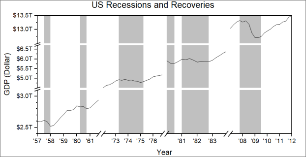
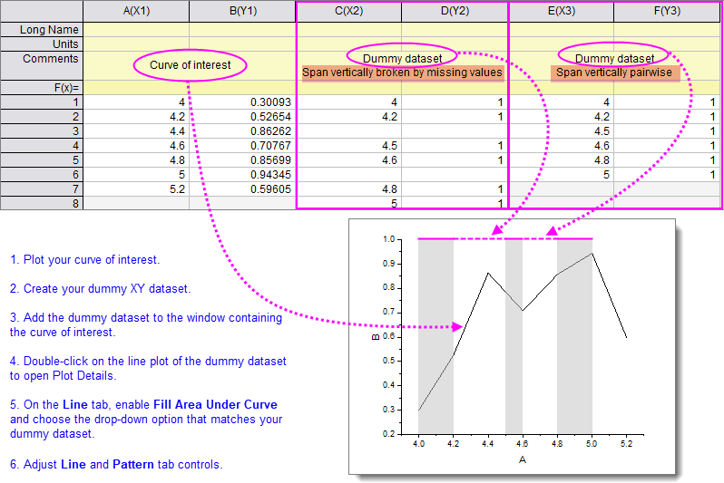
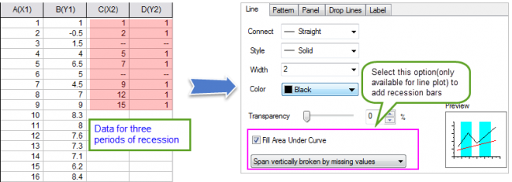
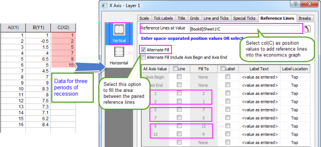

FAQ-840 Wie füge ich Rezessionsbalken zu einem 2D-Diagramm hinzu?
Add-RecessionBars
Letztes Update: 06.10.2021
Beim Zeichnen von Wirtschaftsdaten möchten Sie womgöoch "Rezessionsbalken" -- schattierte vertikale Balken -- hinzufügen, um den Rezessionszeiträume zu markieren. Origin verfügt über zwei Methoden zum Hinzufügen von Rezessionsbalken zu einem 2D-Diagramm.
- 
Bedienelemente unter "Füllfläche unter Kurve" auf der Registerkarte Linie
Ein "Dummy", das heißt, ein zweites XY-Liniendiagramm, wird zum Fenster, das die Kurve von Interesse enthält, hinzugefügt. Das Dummydiagramm wird mit einem XY-Datensatz erstellt, bei dem X den Anfang und das Ende des Rezessionszeitraums kennzeichnet und Y so etwas wie der maximale vertikale Skalierungswert ist.
Es gibt zwei Datenanordnungen, die funktionieren. Beide funktionieren zusammen mit der Registerkarte Linie bzw. der Auswahlliste Füllfläche unter Kurve im Dialog Details Zeichnung:
- Layer vertikal unterbrochen durch fehlende Werte -- die Anordnung wird unten in den Spalten C(X2) und D(Y2) gezeigt. Diese Anordnung hängt von den fehlenden Werten ab -- beachten Sie die leeren Zellen --, um die Zeichnung in Rezessionszeiträume aufzuteilen.
- Span vertically pairwise -- die Anordnung wird unten in den Spalten E(X3) und F(Y3) gezeigt. Anstatt fehlende Werte zu verwenden, um Rezessionszeiträume zu kennzeichnen, nimmt diese Anordnung einfach an, dass sich abwechselnde (d. h. "paarweise) Werte in der X-Spalte den Anfang von jedem Rezessionszeitraum markieren.

- 
 | Um jedem Rezessionsbalken eine andere Farbe zuzuweisen, gehen Sie zur Registerkarte Muster im Dialog Details Zeichnung und klicken Sie unter Füllen auf die Schaltfläche Farbe. Die Farbauswahl wird geöffnet, in der Sie auf die Registerkarte Nach Punkten klicken, die Option Inkrement von aktivieren und Ihre Anfangsfarbe wählen. |
Weitere Informationen finden Sie unter:
Bedienelemente auf der Registerkarte "Referenzlinien" im Dialog Achsen verwenden
- Füllen Sie die Fläche zwischen den Referenzlinien mit Hilfe der Optionen Abwechselnd füllen auf der Registerkarte Referenzlinien des Dialogs Achsen.
- 
- Siehe Einzelheiten in diesem Beispiel.
Schlüsselwörter:Rezessionsbalken, Füllunterbrechungen, vertikale Balken, Rezessionszeiträumen, Wirtschaftsdaten
Origin-Version mind. erforderlich: 2017 SR0